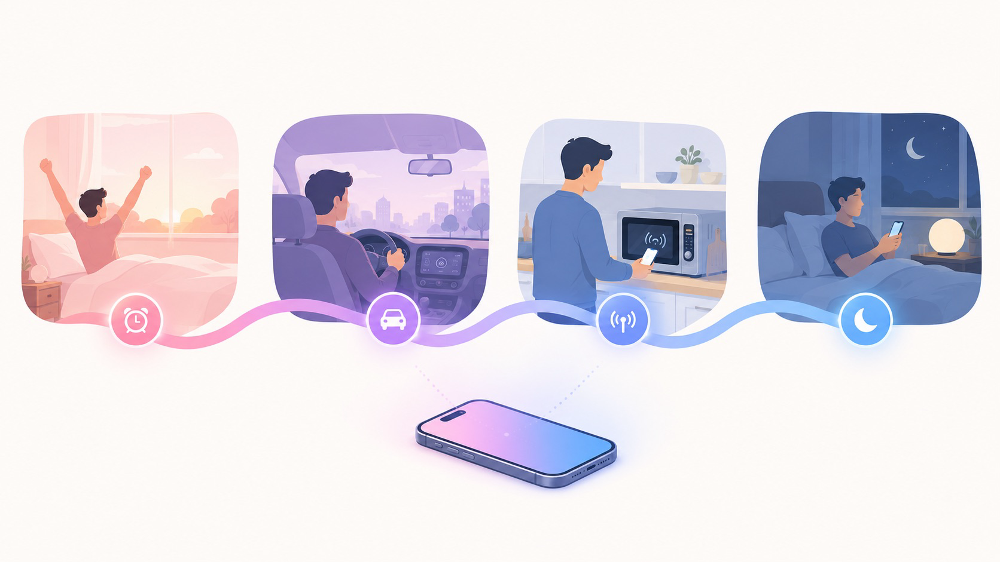

Chapter 08 · Where It Earns Its Keep, Part 1
Use Cases: Running Your Day
This chapter and the next are the payoff — the requests behind this book asked for the places Shortcuts is effective, not just clever. Each use case below names the trigger, the key actions, and why it beats doing it by hand. Build the ones that match your life; skip the rest without guilt.

A clean, modern flat-vector editorial illustration of one person's day quietly orchestrated by their iPhone: four small vignettes (sunrise alarm, a car commute, a kitchen with an NFC-tagged microwave, a calm bedside at night) connected left-to-right by a single flowing ribbon in a pink-to-purple-to-blue gradient, like a thread of automation. Light airy background, soft rounded shapes, Apple-keynote aesthetic, no text baked in. Target size ~1280×720px, 16:9 landscape; the art is letterboxed into a 16:9 box, so keep the vignettes centred with safe margins.
Generate this with your image agent, then drop the file here.
1 · The morning brief
Trigger alarm stopped (or wake-up from your Sleep schedule). Actions Get Current Weather → Get Upcoming Events → Text composing "Good morning — 72° and clear. First up: 9:30 stand-up." → Speak Text → Play Podcast.
Why it wins: the information you'd poke three apps for arrives while your eyes are still half-closed. With Apple Intelligence, swap the Text assembly for the Gallery's Morning Summary and let the model write the brief.
2 · The commute pair
Two automations that bracket every drive:
- Leaving work (location or CarPlay trigger) → Get Travel Time home → Send Message "Home in ~35 min" → directions + playlist. No thumbs involved.
- Message received "where are you" from your partner → auto-reply with live ETA. (Confirmation mode if you prefer to approve each send.)
3 · The kitchen NFC tag
Stick a $0.30 NFC tag on the microwave. Trigger NFC tag scanned → Choose from Menu: "Pasta 10:00 / Rice 16:00 / Custom" → Start Timer + cooking playlist. Tap phone on tag, pick, done — faster than Siri, no unlocking, and gloriously physical. The same trick works on the front door (leaving-home checklist), the desk (work Focus), the gym bag (workout playlist + gym Focus).
4 · Health & habit logging
Logging fails when it takes four taps; Shortcuts makes it one.
- Water: a Back Tap or watch-complication shortcut runs Log Health Sample (Water, 350 ml). Double-tap the phone's back every time you finish a glass.
- Medication / caffeine / weight: same pattern, different sample type; Ask for Input when the amount varies.
- Mood journal: bedtime trigger → Ask for Input "One line about today" → append to a dated note. A year later you'll have a diary you actually kept.
5 · The battery butler
Trigger battery ≤ 20% → Low Power Mode on, brightness 40%, haptic ping. A second automation at charger-connected turns everything back on. You will literally never think about power management again.
6 · Photo hygiene, one tap
- Screenshot sweep: a weekly shortcut finds screenshots older than 30 days (Find Photos with filters) and offers a one-tap delete.
- Shared album drop: share-sheet shortcut that resizes the selected photos to 2048px and adds them to the family shared album — full-res originals stay put, uploads fly.
7 · Wind-down & the social speed bump
The bedtime automation (Sleep Focus + Night Shift + tomorrow-preview) pairs with the honest one: Trigger Instagram/TikTok opened after 10pm → a menu asking "Really? / 5 minutes / Close". The friction is the feature — you wrote the nag yourself, so you can't resent it.
Notice the shape of every winner here: high frequency × low decision content. Daily moments you handle identically every time are automation gold. Rare or judgment-heavy tasks stay manual — that's not a failure of the tool, it's the correct division of labor.
Sources Apple Support, Shortcuts User Guide — personal automation triggers (support.apple.com/guide/shortcuts) · TechPP, "30 Quick iOS Shortcuts That Will Actually Make Your Life Easier" (techpp.com) · Zight, "The 35 Best Shortcuts for iOS" (zight.com)